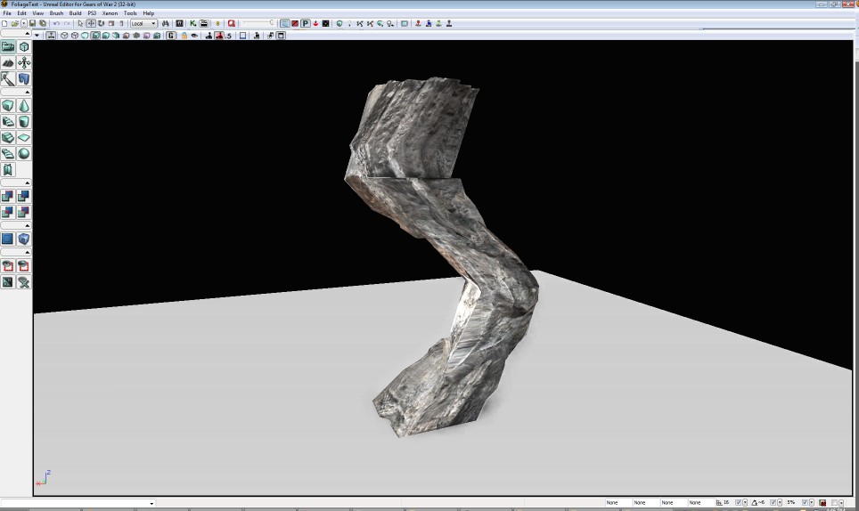

UDN
Search public documentation:
WorldPositionOffsetCH
English Translation
日本語訳
한국어
Interested in the Unreal Engine?
Visit the Unreal Technology site.
Looking for jobs and company info?
Check out the Epic games site.
Questions about support via UDN?
Contact the UDN Staff
日本語訳
한국어
Interested in the Unreal Engine?
Visit the Unreal Technology site.
Looking for jobs and company info?
Check out the Epic games site.
Questions about support via UDN?
Contact the UDN Staff
世界位置偏移
文档变更记录：由 Daniel Wright 创建。
概述
世界位置偏移可以使美术师在材质编辑器中修改顶点世界位置，这可以为不同类型的对象任意变换特效和定制环境动画。
工作原理
无论您向世界位置偏移输入中插入什么，只需将其添加到顶点的位置。例如，以下节点会创建一个沿着在 x 轴上偏移顶点的网格物体的 Z 轴不断下方移动的正弦波：
 下面是将该材质应用于一个柱子网格物体的特效：
下面是将该材质应用于一个柱子网格物体的特效：

在尝试创建任何复杂的特效之前，复习数学和几何体可能是个不错的主意。 以下是一些会有帮助的页面：顶点着色器
世界位置偏移材质输入在顶点着色器中执行。它与所有其他现存的材质输入都有所不同，它们都可以应用于像素着色器中。很多在材质编辑器中显示的材质节点在顶点着色器中无法工作，特别是与查找贴图相关的。这些节点将会通知您一个错误“在顶点着色器输入中使用的无效节点！”。所有数学函数都会与 WorldPosition、VertexColor 以及大多数常量（例如 Time 和 ObjectPosition）一起工作。 在顶点着色器中进行操作的结论是网格物体的细分非常重要，因为只有顶点可以进行变换。您可以在上面的图片中看到顶点变换。 注意：如果您将某些内容插入到将使您跟踪您所创建的顶点着色器有多昂贵的世界位置偏移，那么材质编辑器会左上方显示顶点介绍。
有效的材质表达式
请参阅MaterialsCompendium（材质一览表）了解所有这些节点的说明。
- WindDirectionAndSpeed - 使用该节点可以在一个关卡的不同对象之间协调风动画。
- RotateAboutAxis - 可以使绕着任意轴旋转的帮助节点。
- FoliageNormalizedRotationAxisAndAngle - 与交互植被 Actor 了解更多有关交互关卡的信息。
会根据顶点改变的输入
世界位置可以用于在顶点之间添加变量，例如，一阵风吹过后起伏的草地。 顶点颜色可以对网格物体的不同部分使用任意权重。您甚至可以使用网格物体绘制工具绘制顶点影响并会对动画产生这些影响。 好的方法是每个会根据叶子更改正弦波阶段的叶子分支都有一个不同的颜色，然后绘制到另一个通道权衡每个顶点可以移动的偏移量。从 QA_APPROVED_BUILD_DEC_2009 时起，世界法线节点还可以用于访问顶点的世界空间法线。输入是每个顶点的常量
WindDirectionAndSpeed 可用于从位于关卡的任何风 actor 中获取风参数，它可以再运行时发生改变。 如果您使用的是具有特定 Physics（物理）类型的 Dumb Proxy（哑代理），那么它会创建一个十分惊心动魄的特效，因为每一小秒您就会获得本地更新，而且不会执行仿真或预测。 当然，Time 可以随时用于过程式的动画。性能注意事项
世界位置平移会生成顶点着色器代码，每个顶点可以执行它一次。您可以通过比较连接和不连接您的节点情况下顶点着色器介绍数目跟踪您所添加的介绍数量。要了解真正的影响，请使用诸如 PerfHUD 或 PIX 工具，在您的目标平台和概要文件上使用和不使用世界位置偏移的情况下设置一个关卡。
限制
世界位置偏移无法与任何可以访问 CPU 上的顶点位置的顶点一起工作。这意味着贴花和阴影体积以及一些其他效果将不会进行正确的渲染。 它还不会改变碰撞或者影响物理，它只是一种视觉效果，所以最好不要使用这种方法进行大偏移，但是可以使用物理代替。 警告 - 将位置偏移到一个对象边界外部，这会导致渲染失真！ 您可以看到边界，可以使用它通过启用 Show Bounds（显示边界）显示标志并选择编辑器中的一个对象进行剔除。 在 QA_APPROVED_BUILD_MAY_2010 中，已经将一个名为 BoundsScale 的属性添加到图元组件，它可以允许在网格物体上使用大的变换控件增加边界。